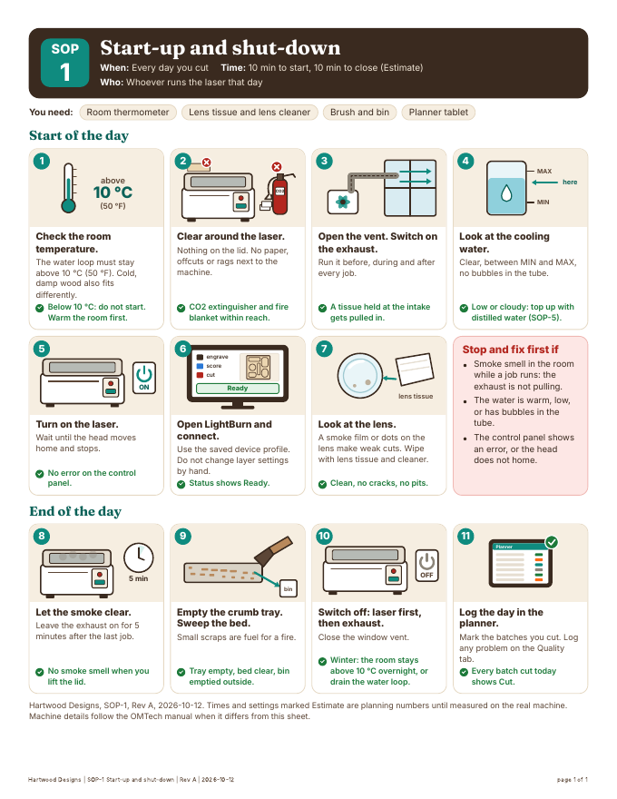
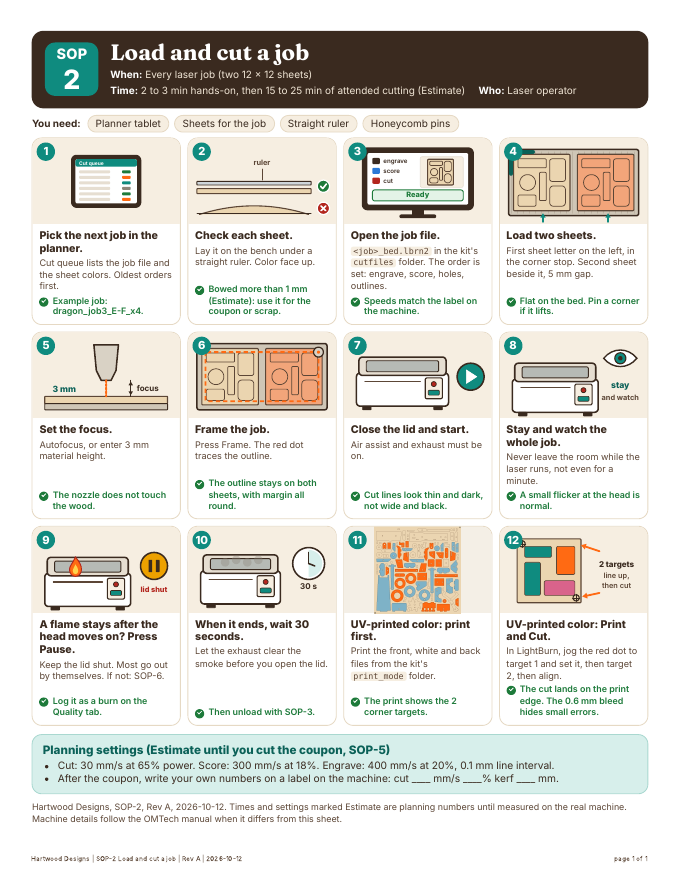
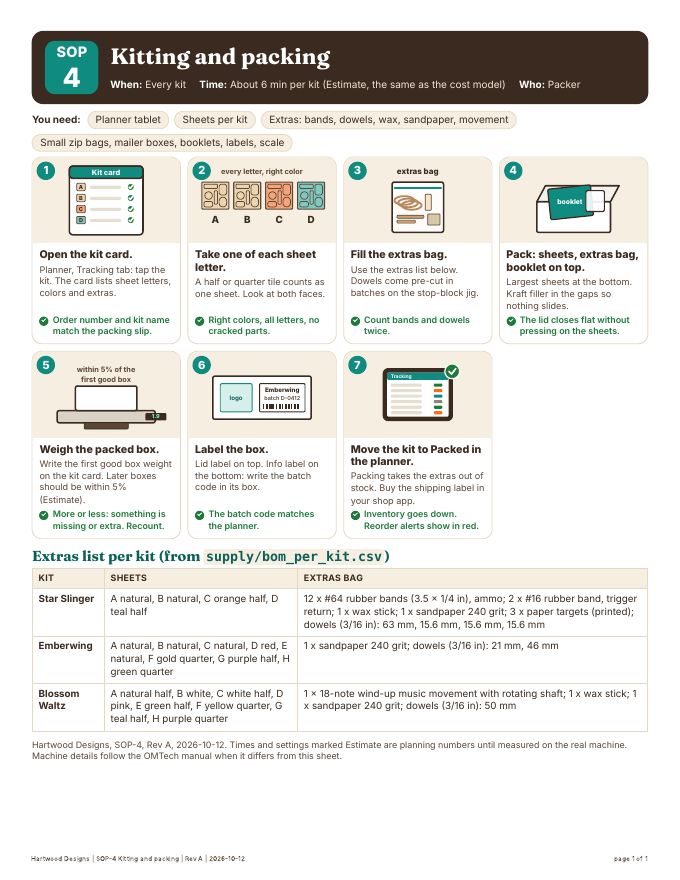
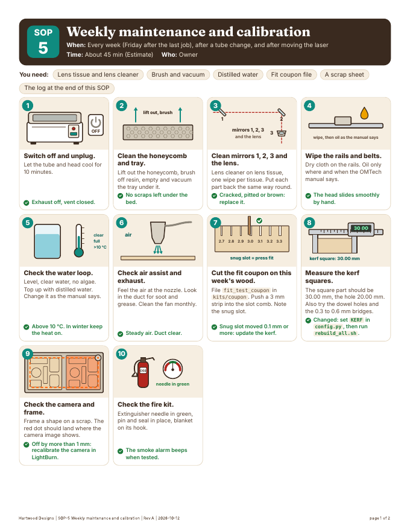
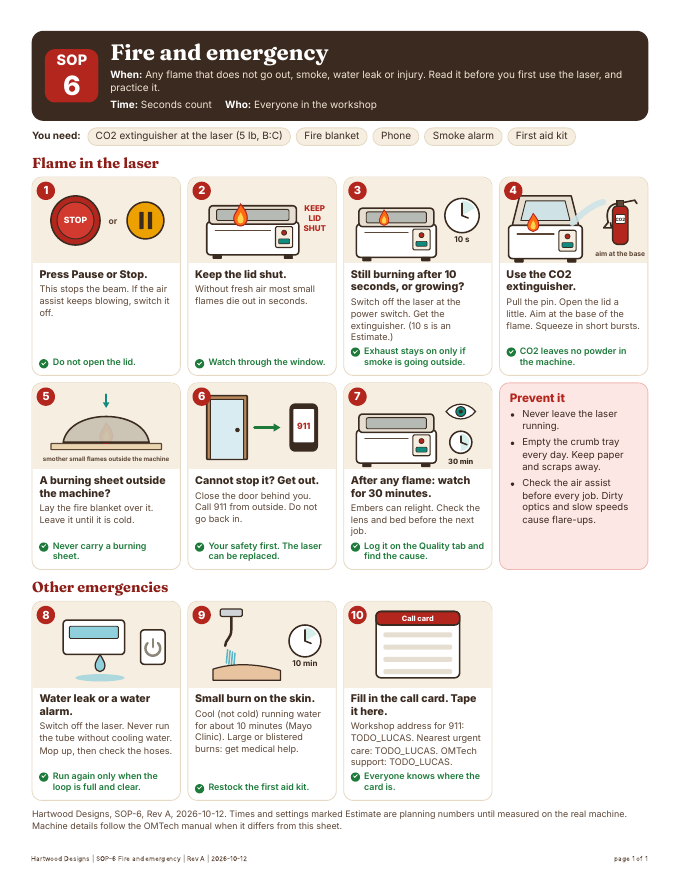
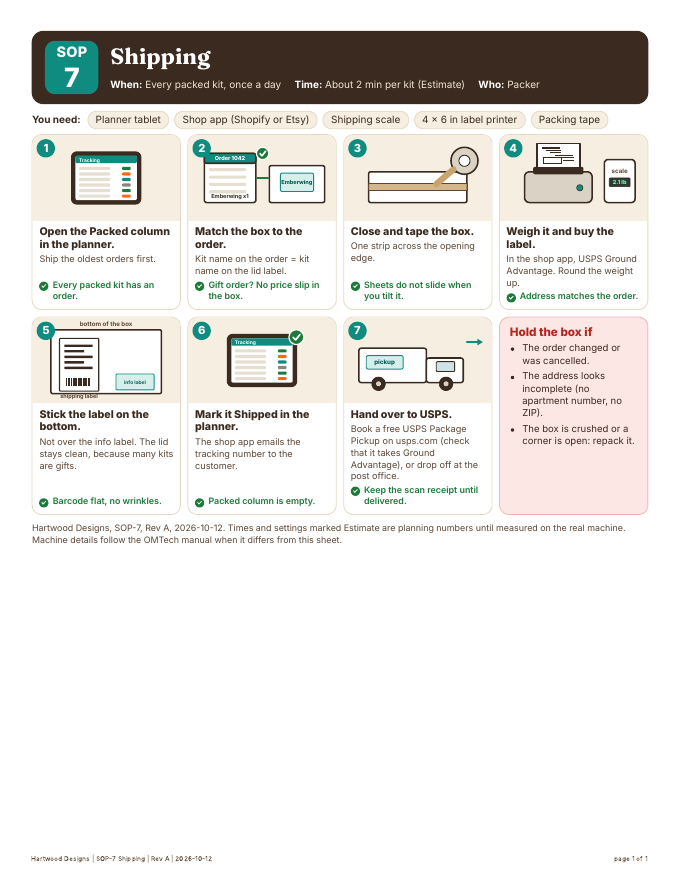

SOP7
Workshop SOPs
Station map: workshop layout. Quality loop: quality_loop.md.


SOP-1: Start-up and shut-downEvery day you cutPDF: SOP-1_startup_shutdown.pdf
SOP-2: Load and cut a jobEvery laser job (two 12 x 12 sheets)PDF: SOP-2_load_and_cut.pdf SOP-3: Unload and pop-out checkEvery job, before the sheets leave the laserPDF: SOP-3_unload_and_popout.pdf
SOP-3: Unload and pop-out checkEvery job, before the sheets leave the laserPDF: SOP-3_unload_and_popout.pdf
SOP-4: Kitting and packingEvery kitPDF: SOP-4_kitting_and_packing.pdf
SOP-5: Weekly maintenance and calibrationEvery week (Friday after the last job), after a tube change, and after moving the laserPDF: SOP-5_weekly_maintenance.pdf
SOP-6: Fire and emergencyAny flame that does not go out, smoke, water leak or injury. Read it before you first use the laser, and practice it.PDF: SOP-6_fire_and_emergency.pdf
SOP-7: ShippingEvery packed kit, once a dayPDF: SOP-7_shipping.pdf